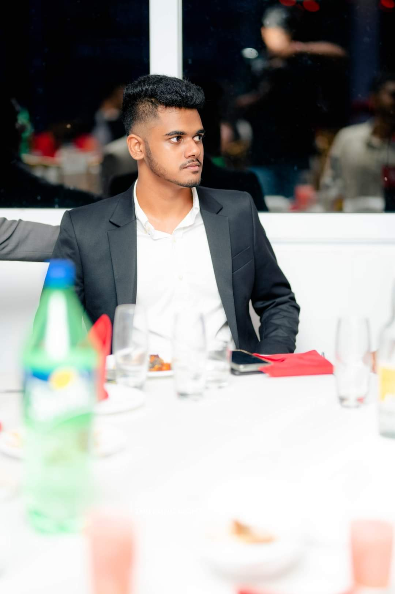

Hello! I’m Chamuditha Nonis,an undergraduate student currently studying Computer Science at Informatics Institute of Technology. I’m passionate about learning and applying my knowledge in web development, data science, software engineering.
Who Am I?
Hello! I’m Chamuditha Nonis,an undergraduate student currently studying Computer Science at Informatics Institute of Technology. I’m passionate about learning and applying my knowledge in web development, data science, software engineering.
Skills & Interests
- Programming Languages: HTML5, CSS3, JavaScript, Python
- Frameworks: React, Node.js
- Tools: Git, Figma, Visual Studio Code
- Areas of Interest: Web Development, UI/UX Design, Data Analysis
My Academic Journey
As a student, I have been focusing on building a strong foundation in programming, algorithms, databases. I've also had the chance to work on projects like "a website for local businesses" and "an AI model for image recognition", which sparked my interest in AI and Digital marketing fields.
Beyond the Classroom
Outside of my studies, I enjoy reading, playing sports, learning new technologies. I’m also actively involved in Leo club and IEEE, where I get to apply my skills and collaborate with like-minded peers.
Looking Ahead
My goal is to further develop my skills through internships and personal projects. I'm eager to gain practical experience and learn from industry professionals as I prepare for a career in software engineering and data science.
Skills & Interests
- Programming Languages: HTML5, CSS3, JavaScript, Python
- Frameworks: React, Node.js
- Tools: Git, Figma, Visual Studio Code
- Areas of Interest: Web Development, UI/UX Design, Data Analysis